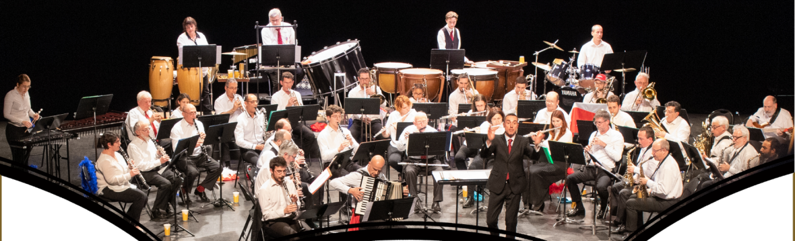

Je vais dans cette partie vous présenter une de mes passions : la musique.
Je suis musicien depuis mes 6 ans.
Je joue de la trompette et du ukulele.
J'ai 12 ans d'expérience en trompette et 1 mois d'expérience en ukelele.
Jouer de la musique est un moyen pour moi d'effacer ma timidité, de me détendre et de rencontrer de nouvelles personnes que je n'aurais jamais pu rencontrer sans ma pratique de la musique.
J'ai eu l'occasion de jouer pendants 2 ans dans l'orchèstre du Provinois. J'ai pu jouer à de nombreux concerts et enrichir mon apprentissage de la trompette.
J'ai ensuite eu la chance de jouer pendant 5 ans (de ma 4ème à ma terminale) à l'harmonie municipale de Provins (Seine-et-Marne, 77). J'y ai occupé le pupitre de 3ème, 2ème et 1ère trompette. J'ai participé à plusieurs animations (fête de la musique, fête de la moisson, etc...) ainsi qu'à de nombreux concerts (dont la Sainte-Cécile). J'ai également participer aux commémorations organisées par la ville de Provins.
J'étais en parallèle membre d'un groupe de musique créer par mon professeur de trompette. Nous participions à de nombreuses animations en Seine-et-Marne (fêtes médiévales, rassemblements, fêtes de la musique, concert dans les rues, etc ...).
Dans un ensemble musical, un pupitre désigne un groupe de musiciens exécutant la même partie. En musique, avoir plusieurs pupitres permet aux compositeurs de créer des musiques plus complexes, et plus abouties. Généralement, le numéro de pupitre correspond à la difficulté de la partition (1er pupitre = plus dur, 4ème pupitre = plus facile). Les pupitres permettent également au chef d'orchestre d'attribuer des partitions selon le niveau d'expérience du musicien.